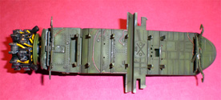

{kind=link}
{kind=link}
{kind=link}
{kind=link}
{kind=link}
{kind=link}
{kind=link}
{kind=link}
{kind=link}
{kind=link}
{kind=link}
{kind=link}
{kind=link}
{kind=link}
{kind=link}
{kind=link}


Hobby Boss 1/48 TBF-1C Avenger
Kit #80314 MSRP $74.95 $63.70 from Great Models Web Store
Images and text Copyright © 2010 by Matt Swan with scale commentary by Gaston Marty
Developmental Background
The Avenger was one of the most famous aircraft of WWII in Navy service and rapidly displaced the obsolete Devastator aboard US carriers. Originally designed as a carrier-based torpedo bomber by Grumman Aircraft, the Avenger found use as a close-support bomber and patrol aircraft. From the Guadalcanal landings in August 1942 until the end of the Pacific War it remained the only shipboard torpedo aircraft of the US Navy and was known as the largest single-engine, carrier-based aircraft of WWII.
The order for two prototypes was placed on 8 April 1940 and first aircraft was flown on August 1st 1941. The first three-seat Grumman TBF-1 Avengers went into service just less than one year later. The US Navy's demands for Grumman production of the F6F Hellcat fighter led to manufacture of the Avenger being taken over by Eastern Aircraft Division of General Motors - the GM-produced aircraft being designated the "TBM". Those manufactured by Grumman were designated “TBF”.
On the afternoon of December 7, 1941, Grumman held a ceremony to open its new Plant 2 in Bethpage and to display the new torpedo bomber to the public. During the program, Grumman vice president Clint Towl was notified that the Japanese had attacked Pearl Harbor but no announcement was made and the festivities continued. The new plane first saw action on 4 June 1942 against the Japanese carrier striking force at the Battle of Midway - only six Avengers were involved, operating from Midway Island. Five of the six were shot down, the surviving plane returned to Midway severely damaged and with its gunner dead but it demonstrated the Avenger’s toughness, and it was immediately apparent that its battle-worthiness justified its production in great numbers.
The Avenger took part in every carrier-versus-carrier battle and almost all carrier operations from Midway onwards, working from every fast carrier and escort carrier of the Pacific Fleet and from land bases. For almost all of this time it operated as a bomber, a search aircraft and as an anti-submarine aircraft, rather than as a torpedo-plane. As a torpedo-plane it was initially hampered by the many serious defects in the American torpedoes however in the Battle of Leyte Gulf the Avenger achieved one of its most notable successes by sinking the Japanese battleship Musash after delivering nineteen hits.
The Avenger's virtues, especially its ruggedness, reliability, and stability as a weapons platform, ensured it a remarkably long operational history. It in fact remained in service - as an anti-submarine, search-and-rescue aircraft, an all-weather night bomber and an electronic countermeasures platform - until 1954. Until recently, at least one aerial firefighting operation used Avengers as fire bombers and/or fire spotters over the woods of Canada.
During its career it was known by many names: Chuff, Turkey, Pregnant Beast or Tarpon (RAF). No matter what it was called it was a widely used aircraft and was produced in great numbers with 7546 being manufactured by General Motors and 2290 manufactured by Grumman. Today, according to Warbird Alley, there are at least 42 of these amazing aircraft still airworthy.
The Kit
I think the first question that rose in many modelers minds when this kit was released was ‘do we really need another Avenger kit?’ Really, was the Accurate Miniatures kit not pretty darned good? Maybe the question should have been ‘what can be better than what we have now?’ or ‘what inaccuracies that I suffered previously have been resolved?’ Sadly the answers provided by the Trumpeter kit do not adequately resolve any of these questions. One thing the Trumpeter kit gives us that the earlier AM kit did not was folded wings. Admittedly you could buy an aftermarket wing fold kit for the Accurate Miniatures package and by that time you would have a comparable total kit cost so no great gain here. Before I talk about the actual physical plastic let’s take a moment and review some of the accuracy issues that were evident with the AM kit and whether they have been addressed in the Trumpeter kit or now.
First let me say that I don’t think there is any kit on the market of any subject that is completely accurate. There will always be some detail that the kit manufacture simply did not get right, sometimes these are minor while others they are glaringly obvious. As the modeler we need to decide what is acceptable or not on an individual basis. For many modelers if it looks like your intended subject, that is good enough. It may not matter that the model is 3 scale inches too long, has five spokes on a rim rather than four or has an extra row of rivets. For others this could be a deal breaker.
You may click on these small images to view larger pictures
My general modeling philosophy is “if it looks like a ------ then it’s good enough for me” providing of course that there are no really glaring errors. What exactly a glaring error is can be pretty subjective though so let’s visit or resident rivet counter, Gaston Marty and see just how this kit compares with published drawing.
Compared to the Accurate Miniatures kit (which has it’s own issues) the Hobby Boss TBM-3 demonstrates the correct prop and likely better side profile but the top and bottom intakes are far too proportionally deep or narrow, which would be very labor-intensive to fix.
There are no really good TBM-3 cowls or resin correction options, so the easy choices are limited to TBF-1 variants:
HB TBF-1: This cowling is the only one that appears to be correct.
Actual dimensions. (All from CAF TBM-3 pilot Rob Duncan)
Wing chord at root: 140" actual= 3556 mm= 1/48th: 74.0 mm
HB = 75.7 mm
Wing chord at outer aileron edge: 59" actual= 1498 mm= 1/48th: 31.2 mm
HB = 31 mm
Wing uppermost root point to canopy base: 29.0" actual= 736 mm= 1/48th: 15.3 mm
HB = 14.9 mm
Actual aircraft front canopy bottom width: 38.5" actual= 978 mm= 1/48th: 20.3 mm.
Front canopy top frame cross-section width: 22" actual= 558 mm= 1/48th: 11.6 mm.
The Hobby Boss canopy is deceptive 22-23 mm on-sprue which in fact flexes down easily to the needed fuselage width of 20.5-20.6 mm. The Hobby Boss front canopy top frame comes in at 11.2 mm.
Decals and Instructions
Kit instructions consist of three separate sheets, two that are black and white multi-panel fold-outs and a single double sided full color glossy sheet. The fold-out sheets contain fourteen individual panels with lots of exploded view assembly steps. Part numbers are all clearly identified and there are some limited color call-outs. The full color sheet includes a fair paint code chart and displays decal placement instructions for three different aircraft.
The decal sheet is large and adequate for the three aircraft shown however does not include any instrument markings or seatbelt material. Color density is good, print registry looks spot on however the blue background appears nearly black which in my eyes is a little dark.
Construction
This kit looks pretty intimidating on paper as does the Accurate Miniatures kit, there are lots of little parts and layers upon layers of detail to deal with. I began with the interior floor pans painting them dark green then highlighting them with interior green. The engine cylinder banks were done with Alclad steel and highlighted with silver. The kit ignition harness really sucked so I simply cut it off and replaced it with medium magnet wire pieces cut to length – this dramatically improved the looks of the power-plant. The seatbelts were cut from the decal sheet and applied with the paper backing in place to give them a little more depth. The aft gun turret proved to be a real challenge being very fiddly and is also difficult to install in the fuselage.

You may click on these small images to view larger pictures